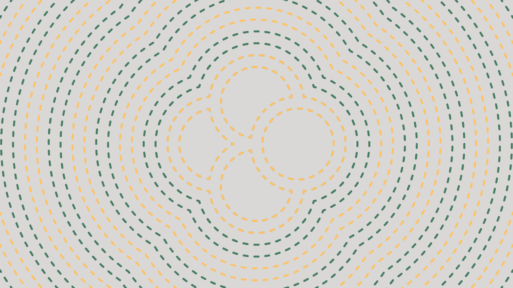

niks božović
/ ovo je moj stari identitet, sa idejom čistijeg dizajna. ukratko, inspiracija mi je bio tekst
dirty design
od marjanne van halvert. dizajn za bolji svet mi je i dalje cilj, ali sam ušla više u teoriju. /
instagram
ne radi video :(

ne radi video :(